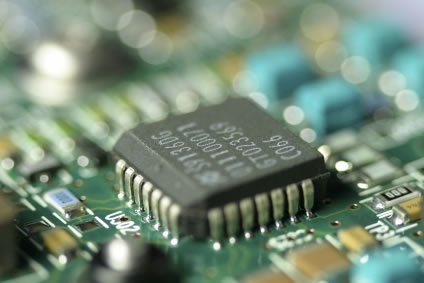

Técnico em Informática é o profissional que está apto a realizar configurações de sistemas, a instalar equipamentos e a verificar as causas de falhas na programação de computadores. Esse profissional pode trabalhar em empresas do ramo ou prestar atendimento por conta própria.
O Técnico em Informática deve ser um profissional atualizado, cooperativo, comunicativo, ético e confiante, que atue de forma responsável, participatica e empreendedora no desenvolvimento de atividades tecnológicas ligadas à informática. Deve também apresentar facilidade de adaptação e estar sempre aberto a mudanças, visando alavancar projetos e ações inovadoreas para a solução de problemas apresentados nos diversos segmentos da área.
Técnico em Informática pode trabalhar com:
- Manutenção de Computador
- Criação de sites (Web Design)
- Webmaster
- Computação Gráfica
- Instrutor de Informática
- Monitor de informática
- Operador de computador
- Administrador de Redes
- Programador